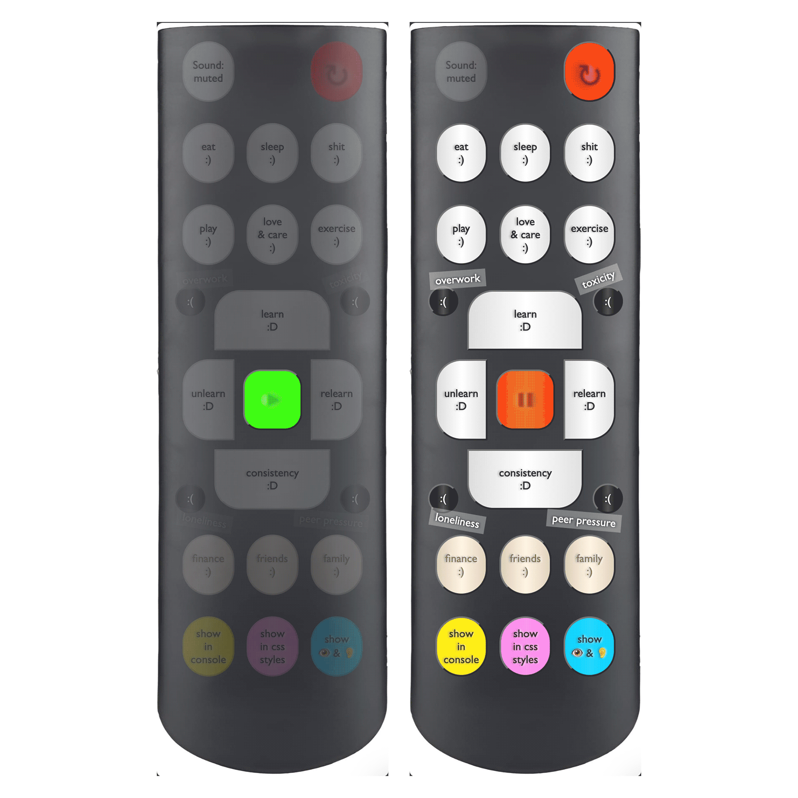

Measure a machine’s heart
In this project, I gave a machine a kind of human-like passion and showed how that passion either ramps up (lights up) or fades away (burns out) depending on a few factors. The visual style is reminiscent of the data you see on an ECG machine, and all of that can be explored within the developer tools.
Take a look at the github repository.

1/ Concept – Web Development Tools:
The idea to utilize the developer tool as an output display had been on my mind for quite some time. In fact, the inspiration for this concept traces back to the moment I first came across Everest Pipkin's work–bodies.html at ifyoulived.org/bodies. This project replicates the human body within the console log, as the name suggests, and it left a lasting impression on me.
My project deals with similar concept of exposing the internal structure of digital entities with the Web Development Tools. I find that web browsers' built-in WebDev tools are the easiest for regular folks to use without having to install anything extra. Plus, since developers use them a lot, they're pretty like everyday objects and have the potential to be repurposed for things other than development, like art.
On top of using developer tools as an output display, I introduced an additional layer of concept by transforming the website interface into a remote control. This twist effectively switched the roles, with the front-end now operating as the back-end and the back-end serving as the front-end.
2/ Concept – Light up and burn out one’s passion:
The remote control featured a variety of buttons, each with a specific function. Each button had a distinct effect on the 'passion' visualizer, simulating how one's enthusiasm and passion could either intensify (light up) or diminish (burn out). These effects were influenced by a range of internal and external factors, mirroring the complexities of real-life experiences where passion can fluctuate due to various influences.
Visualizing in the Styles panel
Visualizing in the Console panel
Visualizing camera projection into ASCII art, this was added when I tried to improve this project as a submission to HTML Review
3/ Development:
This website was a valuable learning experience for me in creating ASCII animations using JavaScript. I divided the animation process into three key parts: position calculation, mapping to an array, and rendering it on the DOM so that it can be displayed into the Element window of the Dev Tool.
Thank you Tường Vi Ng for reaching out to me. Work done for Bông Hoa Nhỏ exhibition 2023 by Bắp Xào